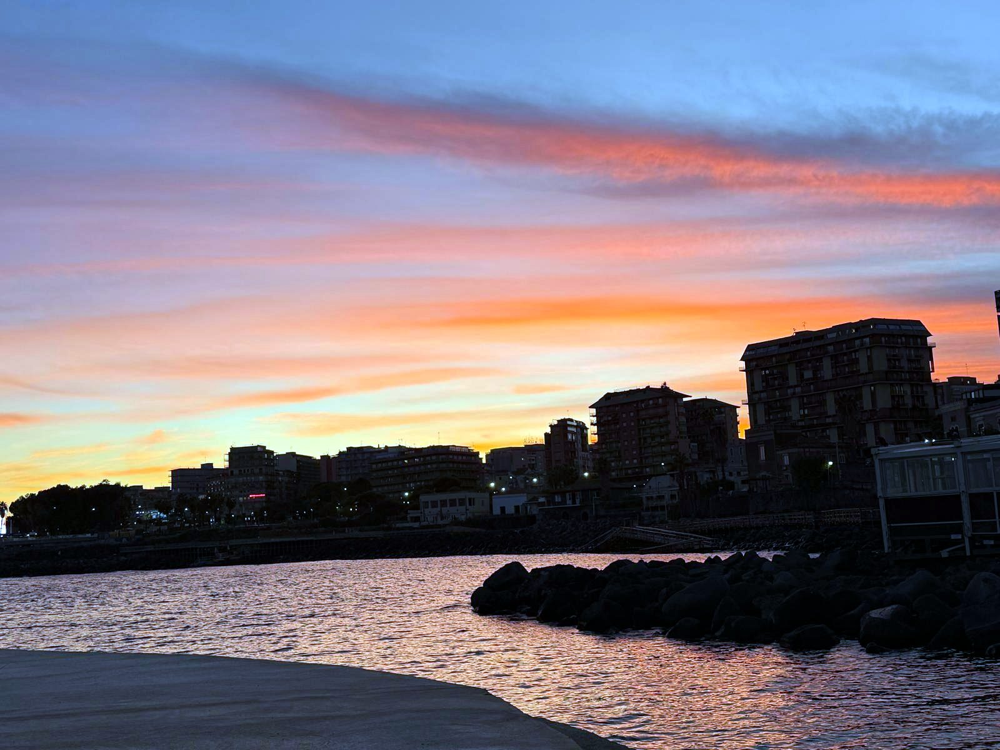

Apartamenty na południu Włoch
Wybierz apartament, napisz do nas po polsku i zarezerwuj bezpośrednio.

Nasze apartamenty
Napisz, kiedy przyjeżdżasz i ile was jest – pomożemy wybrać najlepszą opcję.
Jak zarezerwować
Napisz do nas
Na WhatsApp lub e-mailem: termin, liczba osób i apartament, który Cię interesuje.
Sprawdzamy dostępność
Odpowiadamy po polsku i wysyłamy cenę za Twój termin.
Potwierdzamy rezerwację
Dostajesz potwierdzenie i wszystkie informacje o przyjeździe.
Wycieczki
Sekcja w przygotowaniu.
Kontakt
Napisz do nas po polsku – pomożemy wybrać apartament i termin.